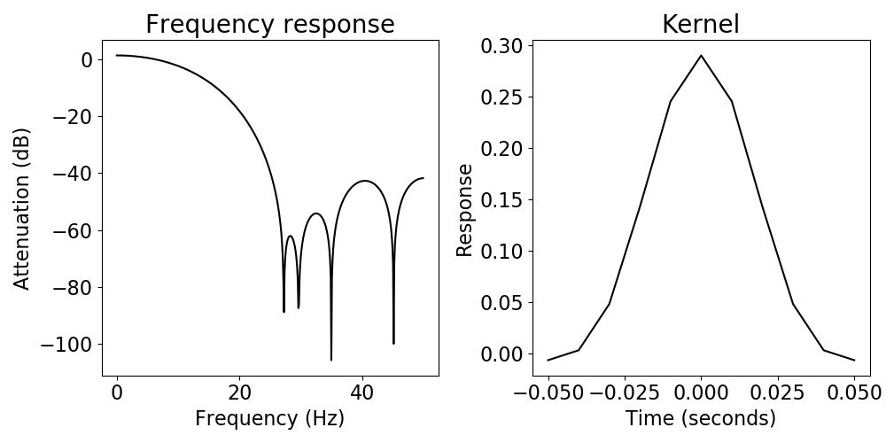
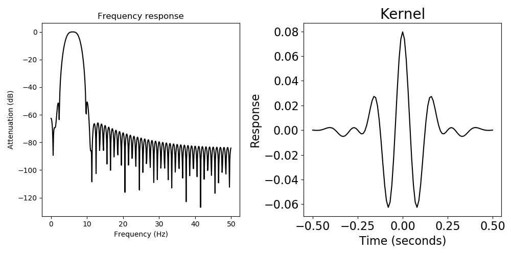

Note
Click here to download the full example code
Filtering¶
Using digital filters on neural signals, including highpass, lowpass, bandpass & bandstop.
This tutorial primarily covers neurodsp.filt.
Sections¶
This tutorial is broken down into the following sections:
- Bandpass filter: extract a single oscillator from your signal
- Highpass, lowpass, and bandstop filters: remove power in unwanted frequency ranges
- Time-frequency resolution tradeoff: Change the filter length
- Infinite-impulse-response (IIR) filter option.
- Beta bandpass filter on a neural signal
import numpy as np
import matplotlib.pyplot as plt
from neurodsp import filt
# Set the random seed, for consistency simulating data
np.random.seed(0)
1. Bandpass filter¶
Extract signal within a specific frequency range (e.g. theta, 4-8 Hz).
# Generate an oscillation with noise
times = np.arange(0, 4, .001)
sig = np.random.randn(len(times)) + 5*np.sin(times*2*np.pi*6)
fs = 1000
# Filter the data, across a frequency band of interest
fc = (4, 8)
sig_filt = filt.filter_signal(sig, fs, 'bandpass', fc)
Out:
Transition bandwidth is 2.0 Hz.
Pass/stop bandwidth is 4.0 Hz.
# Plot filtered signal
plt.figure(figsize=(15, 3))
plt.plot(times, sig, 'k', label='raw')
plt.plot(times, sig_filt, 'r', label='filtered')
plt.legend(loc='best')
Notice that the edges of the filtered signal are clipped (no red).
Edge artifact removal is done by default in filter_signal(), because
the signal samples at the edges only experienced part of the filter.
To bypass this feature, set remove_edge_artifacts=False, but at your own risk!
2. Highpass, lowpass, and bandstop filters¶
2a. Highpass filter¶
Remove low frequency drift from the data
# Generate a signal with a low-frequency drift
times = np.arange(0, 6, .001)
sig = np.random.randn(len(times)) + 5 * np.sin(times*2*np.pi*3) + 4 * np.sin(times*2*np.pi*.5)
# Filter the data
fc = 2
sig_filt = filt.filter_signal(sig, fs, 'highpass', (fc, None))
Out:
Transition bandwidth is 1.0 Hz.
Pass/stop bandwidth is 498.0 Hz.
# Plot filtered signal
plt.figure(figsize=(15, 3))
plt.plot(times, sig, 'k', label='raw')
plt.plot(times, sig_filt, 'r', label='filtered')
plt.legend(loc='best')

2b. Lowpass filter¶
Remove high frequency activity from the data.
# Generate a signal with a low-frequency drift
times = np.arange(0, 6, .001)
sig = np.random.randn(len(times)) + 5 * np.sin(times*2*np.pi*3) + 4 * np.sin(times*2*np.pi*.5)
# Filter the data
fc = 20
sig_filt = filt.filter_signal(sig, fs, 'lowpass', (None, fc))
Out:
Transition bandwidth is 8.8 Hz.
Pass/stop bandwidth is 20.0 Hz.
# Plot filtered signal
plt.figure(figsize=(15, 3))
plt.plot(times, sig, 'k', label='raw')
plt.plot(times, sig_filt, 'r', label='filtered')
plt.legend(loc='best')
2c. Bandstop filter¶
Remove 60Hz noise from the data
Notice that it is necessary to set a nondefault filter length because a filter of length 3 cycles of a 58Hz oscillation would not attenuate the 60Hz oscillation much (try this yourself!).
# Filter the data
fc = (58, 62)
sig_filt = filt.filter_signal(sig, fs, 'bandstop', fc=fc, n_seconds=0.5)
# Plot filtered signal
plt.figure(figsize=(15, 3))
plt.plot(times, sig, 'k', label='raw')
plt.plot(times, sig_filt, 'r', label='filtered')
plt.legend(loc='best')
# Note the user warning above.
# This is because in the computed frequency response (below),
# the attenuation in the stopband does not go below 20dB.
sig_filt = filt.filter_signal(sig, fs, 'bandstop', fc=fc, n_seconds=0.25,
plot_freq_response=True)
# This user warning disappears if we elongate the filter
sig_filt = filt.filter_signal(sig, fs, 'bandstop', fc=fc, n_seconds=1,
plot_freq_response=True)
Out:
Transition bandwidth is 2.0 Hz.
Pass/stop bandwidth is 4.0 Hz.
3. Time-frequency resolution tradeoff¶
With longer filter kernels, we get improved frequency resolution, but worse time resolution.
Two bandpass filters (one long and one short)¶
Notice that the short filter preserves the start of the oscillation better than the long filter (i.e. better time resolution).
Notice that the long filter correctly removed the 1Hz oscillation, but the short filter did not (i.e. better frequency resolution).
# Generate an oscillation with noise
times = np.arange(0, 3, .01)
sig = np.random.randn(len(times)) * .3 + 5 * np.sin(times*2*np.pi*6) + 4 * np.sin(times*2*np.pi*1)
fs = 100
# Set the first second to 0
sig[:fs] = 0
# Define the frequency band of interest
fc = (4, 8)
# Filter the data
sig_filt_short = filt.filter_signal(sig, fs, 'bandpass', fc=fc, n_seconds=.1)
sig_filt_long = filt.filter_signal(sig, fs, 'bandpass', fc=fc, n_seconds=1)
Out:
Transition bandwidth is 9.9 Hz.
Pass/stop bandwidth is 4.0 Hz.
Transition bandwidth is 1.4 Hz.
Pass/stop bandwidth is 4.0 Hz.
# Plot filtered signal
plt.figure(figsize=(15, 3))
plt.plot(times, sig, 'k', label='raw')
plt.plot(times, sig_filt_short, 'r', label='short filter')
plt.plot(times, sig_filt_long, 'b', label='long filter')
plt.legend(loc='best')
# Visualize the kernels and frequency responses
print('Short filter')
sig_filt_short = filt.filter_signal(sig, fs, 'bandpass', fc=fc, n_seconds=.1,
plot_freq_response=True)
print('\n\nLong filter')
sig_filt_long = filt.filter_signal(sig, fs, 'bandpass', fc=fc, n_seconds=1,
plot_freq_response=True)
- 
- 
Out:
Short filter
Transition bandwidth is 9.9 Hz.
Pass/stop bandwidth is 4.0 Hz.
Long filter
Transition bandwidth is 1.4 Hz.
Pass/stop bandwidth is 4.0 Hz.
4. Infinite impulse response (IIR) filter option¶
So far, the filters that we’ve been using are finite impulse response (FIR) filters. These filters are nice because we have good control over their properties (by manipulating the time-frequency resolution tradeoff through the filter length).
However, sometimes we may not be as concerned with the precise filter properties, and so there is a faster option: IIR filters. We often use these filters when removing 60Hz line noise.
Here we apply a 3rd order butterworth filter to remove 60Hz noise. Notice that some edge artifacts remain.
# Low-pass filter the signal at 100Hz, just for fun.
sig = filt.filter_signal(sig, fs, 'lowpass', fc=100)
Out:
Transition bandwidth is 43.9 Hz.
Pass/stop bandwidth is 100.0 Hz.
# Filter the data
fc = (58, 62)
sig_filt = filt.filter_signal(sig, fs, 'bandstop', fc=fc, iir=True, butterworth_order=3)
Out:
Transition bandwidth is 1.0 Hz.
Pass/stop bandwidth is 4.0 Hz.
# Plot filtered signal
plt.figure(figsize=(15, 3))
plt.plot(times, sig, 'k', label='raw')
plt.plot(times, sig_filt, 'r', label='filtered')
plt.legend(loc='best')
plt.xlim((0, .2))
5. Beta bandpass filter on neural signal¶
# Filter the data
# If you want to get rid of the transition band printouts, set verbose=False
fc = (13, 30)
sig_filt, kernel = filt.filter_signal(sig, fs, 'bandpass', fc=fc, n_cycles=3,
plot_freq_response=True, return_kernel=True,
verbose=False)
Out:
Transition bandwidth is 5.9 Hz.
Pass/stop bandwidth is 17.0 Hz.
# Plot filtered signal
plt.figure(figsize=(15, 3))
plt.plot(times, sig, 'k', label='raw')
plt.plot(times, sig_filt, 'r', label='filtered')
plt.xlim((2, 5))
plt.legend(loc='best')
Notice that in the filtered time series, the resulting oscillation appears to be more sinusoidal than the original signal really is.
If you are interested in this problem, and how to deal with it, you should check out bycycle, which is a tool for time-domain analyses of waveform shape.
Sphinx settings: sphinx_gallery_thumbnail_number = 12
Total running time of the script: ( 0 minutes 0.269 seconds)